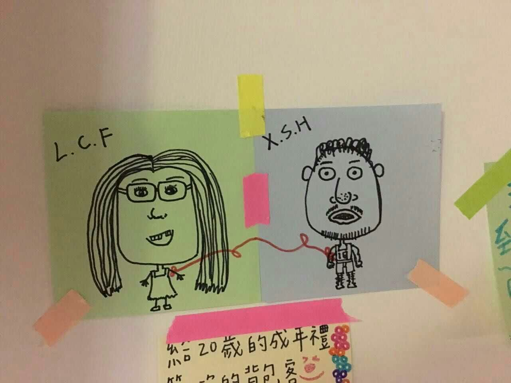
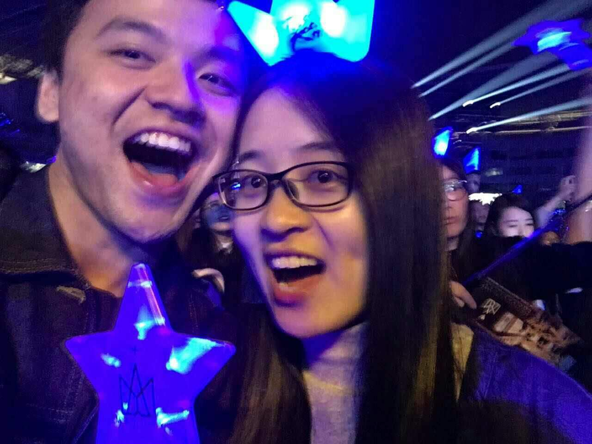
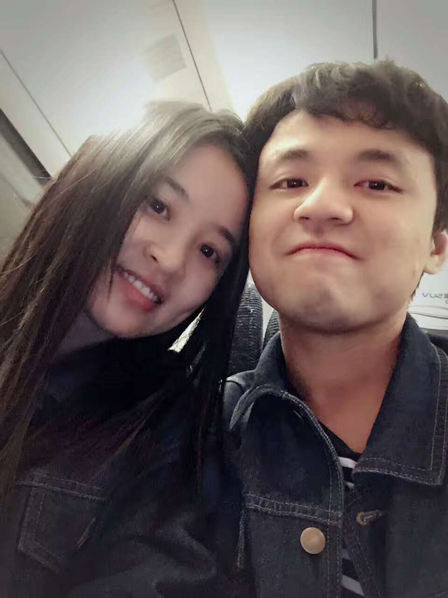

牵一只手，爱一个人，走一条路
序
我不知道自己有多爱你，因为我从来没有像现在这样爱过一个人，包括我自己。
初次见面，请多关照
我们的相识应该从哪天说起呢，记忆中第一次和你说话还是研一的一个晚上，实验室就剩下我们还有你的小跟班小呆呆师兄了，在回宿舍的路上才互相告知对方名字，也或许只有我是第一次知道你的名字，因为你后来说过以前有注意到过我，不过这些都无从考证了，谁知道呢。那天晚上还是之后的某一天你加了我的扣扣，我们偶尔会聊几句。那个时候总觉得你怪怪的，会一个人逛街，平时神出鬼没的。后来可能你也察觉到我的爱答不理又或者你有了别的目标也说不定，总之就是没联络了。。。。
再一次的交流是半年以后了，萌萌师姐让我找曲大神和你去问问如何学习的事，因为一直觉得你怪怪的，所以我就近一致的选择先问曲大神。在萌萌师姐的再三催促下，一个下午我才鼓起勇气去问你。那是一个周日的下午，就只有你和我在实验室里，我拿个本子还有笔一脸谄媚的向你走过去，嘴里说着“师兄，你能不能和我说说该怎么学好C++呀”，然后坐在你旁边听你一本正经的毫无保留的传授经验。鸡汤刚喝了一半，格格就拉我出去玩了，你当时心里一定在想，哎，这个小师妹没救了。
再一次的接触，就是5月20号了。这一天是欢送你们毕业生，谁知道酒量不济的我和所有师兄师姐道别过后就晕晕的了。接下来和你发生了什么我也不记得了，我只记得自己和你说了一些话，然后拥抱了你一下，当然我的抱抱只是惜别与感谢。后来听你说起那天的事，你说就因为那一个拥抱才让你对我有了一点点的心疼和保护的欲望，但当时的我对这些都一无所知。
之后就是撕名牌那天了，我们几个一起躲在一个房间里说好要联盟，谁知后来你态度一转说要撕我，然后我用尽毕生所学编造了一个足以欺骗你的谎言才得以逃脱。后来你说起那天，你说在我夺门而出的那一刻你开始想念我了，每次听到都觉得暖暖的。从那天开始你约我吃饭，美其名曰因为出尔反尔赔罪，单纯的我带有一丝怀疑却还是相信了，一本正经的对你说玩游戏而已我不在意，不用请吃饭的。从那天开始我们之间开始有了过多的交流，时不时会在微信上聊几句。
印象比较深的是之后的别墅趴，我记得你略带走音的“我的歌声里”，记得狂欢时你挡下我刚要豪饮的酒杯，记得你绅士的先让我先用仅剩的水刷牙，记得你拿出手机一本正经的让我选吃饭的地方。

友达以上，恋人未满
从别墅趴之后我们的交流慢慢变多，直到那天你约我出去吃饭，我略带打扮却又不想让你看出自己想美美的出现的小心思。我们俩一整天都嘻嘻哈哈打打闹闹的，也许我们都心照不宣的在享受着这不一样的约会吧。晚上聊天的时候你的突然表白让我不知所措却又有一丝的小欢喜，欢喜后却又有一丝的伤感，想着，也许这样的关系在我拒绝你的这一刻就戛然而止了吧。
第二天我装出一副什么都没发生的样子来到实验室，发现你的表情更冷漠，顿时有一点失落，然后告诉自己就当什么都没发生过就好了，开始了自学数据结构。晚上的时候你来找曲大神，我刚好被链表困扰了一天，心想就算买卖不成仁义总归还在，就打算让你教教我怎么学，然后莫名其妙的我就搬到了你旁边开始学习数据结构。我们俩不约而同的对昨晚发生的事闭口不提，你认真教我认真学，暧昧不知不觉的开始发酵。
这样的暧昧不清持续到6月5号，因为第二天你就要去台湾了，我以为你不会再回学校了，我以为我们的关系就这样断开了。我极力的掩饰自己内心的失落，打算请你吃个饭，就当是送别，也感谢下你最近的努力教学。吃完饭在电梯上你突然牵起了我的手，我不知所措，但是理性的我告诉自己，你要走了，这一切都可能只是你的心血来潮，我还一点都不了解你呢，太多的不安，太多的不确定让我挣脱了你的手，我不敢迈出那一步。
回来的路上我们依旧闭口不谈刚刚发生的事，还是嘻嘻哈哈的交谈想尽量避免尴尬。那个时候我不知道你的想法，看不透你，快要到实验室了，终于还是我忍不住叫住了你告诉你自己拒绝的理由，你依旧表情淡然，让人看不透，我的心也开始慢慢凉下来。第二天我怀着此生不复相见的心情在心里默默的和你告别，没有勇气和你当面说一句再见。
你在台湾的半个月每天还是会找我聊天，只要一有空闲就会找我，看到美景第一个就会想和我分享。记得6.18那天你为我弹唱，还有你在花莲留下的我们俩的漫画像，还有承载着你我的梦想的孔明灯，还有你在最美夕阳下说着希望能和我一起看风景。我几度觉得你是认真的喜欢我的，但是心里总有着不安。
你从台湾回来的那天刚刚好就是我的生日，原本的计划却因为他们打乱了，于是约好晚上再见面。从梅溪湖回来后我洗了澡，略微打扮并换上了一条裙子还有一双不曾穿过的高跟鞋去见你。我们坐在草坪上，说说笑笑，听你唱五月天的“happy birthday”。

生死契阔，与子成说
6.25这是属于我们俩的纪念日，我们俩吃了饭后打算去看烟花，像是一对情侣一样。我提议玩一个游戏，让你闭着眼，我牵着你走路。你没有一丝犹豫把手交给我，然后就不放开了，这一次我没有再放开，我想给自己一个机会，也想给我们一个机会，然后在此刻我的心里仍有着很多的疑虑和不安。我们一直牵着坐上了公交车，走到了杜甫江阁，由于人太多我们只能站在一颗大树下看烟花，你为我戴上了耳机从背后抱着我，你高兴的像个孩子一样。
虽然确定了关系，但你在我心里仍然是一个迷，让人看不透。马上就会面临异地，我不知道你是怎么想的，所以心里有着各种疑虑和担忧。后来我说想和你认真的谈一谈，你瞬间切换到严肃的模式和我交谈，我们谈了好久，从现在到未来。
7月初你回家了几天，总觉得那几天过得格外的漫长，去实验室都觉得无精打采，再也没有人给我买早餐，陪我吃饭了。后来你要入职走了，准备来长沙陪我玩几天，你的爸爸送你来说是想见见我，我又开心又紧张。
接下来就是开始了漫长的异地，我放了暑假，你开始上班。开始工作的你总是很认真，几乎很少有时间陪我，漫长的暑假结束了，属于我的噩耗开始了。莫名其妙的身体里藏了个宝宝，几度崩溃的我因为家人和你的陪伴下坚持了下来，那个时候的你还不懂如何去爱一个人，那个时候的我心里有着千万的委屈，但是因为认定所以坚持，可是这也成为了我心里永远也无法抹去的伤痛，时不时的会跑出来刺痛你我。记得在家的时候妈妈和朋友都问我，为什么发生这么大的事你都没有出现，我向她们解释你现在是工作的重要时期走不开，但是却无法说服自己。我没有吵也没有闹，我告诉自己给你时间让你成长，安心的在家养身体。
我们也曾吵得不可开交，也曾因为赌气几天不联系，但每一次的见面总是能让你我忘却所有的不开心。你带我参加你同学的婚礼，我哭的稀里哗啦告诉你我也想嫁给你了；我们一起去南县，总觉得像是世外桃源，你每天都会在我身边；我们还一起去看你最喜欢的五月天的演唱会，摇断了两根荧光棒；一起跨年，在小蛮腰下亲吻；一起过元宵，包饺子，你知道吗，你做饭的样子最帅了；我们还去了深圳，像两个小孩子出去游玩一样，只因是和对方一起；还去了常德，那个生你养你的地方，还有你傻傻的照片。
一人一心，白首不离
这一年，你有太多的不成熟，我有太多的小脾气，我们因为爱在互相为彼此改变和隐忍，每次短暂的见面总是能让彼此感受到无比的幸福，而短暂的分别也总能让这份感情升华。无论在哪里，无论做什么，只要有你的陪伴都变得不一样。

待续… …